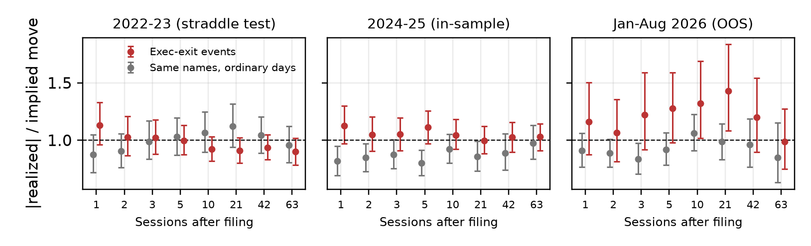

strategy_8k/dbbfe6c)Categories: ceo_departure + cfo_departure + executive_officer_departure, pooled. Strategy: 5 · cash-secured put, 5% OTM, 3–6m expiry, entered at the close of the filing session. Why the market should misprice it: a leadership exit is vivid but ambiguous news. Nervous holders bid up downside puts (demand pressure, Gârleanu et al. 2009), while for mega-caps the business rarely changes overnight. So the put seller earns an event premium on top of the ordinary variance risk premium, measured against a placebo of the same names on ordinary days. We pre-declared three predictions: (P1) CSP beats placebo at 21/42/exp; (P2) realized/implied move ratio is below placebo; (P3) the effect is stronger in 1m options. We only looked at event counts (189 in-sample) beforehand.
The starter notebook's own cells run unchanged (run_window.py executes sections 1–7 for any --start/--end). Only the event table is replaced: the three tags are pooled, with one event per ticker within 5 days. Top-100 universe; spot comes from put-call parity; P&L is per $1 of spot; the placebo is 120 ordinary sessions for the same tickers at least 30 days from any event; 95% bootstrap CIs. In-sample: 2024-01-01..2025-12-31 (189 events, 77 tickers). Out-of-sample: 2026-01-01..2026-08-31, run once (67 events, 48 tickers).
| Sessions | 1 | 2 | 3 | 5 | 10 | 21 | 42 | 63 | exp |
|---|---|---|---|---|---|---|---|---|---|
| CSP, IS | −0.04 | −0.13 | −0.05 | −0.24 | −0.32 | −0.38 | +0.10 | −0.06 | +0.11 |
| 95% CI | ±0.18 | [−.37,.09] | ±0.24 | [−.58,.07] | [−.81,.14] | [−1.0,.25] | ±0.98 | ±1.2 | [−1.2,1.5] |
| CSP, OOS | +0.05 | +0.20 | +0.24 | +0.21 | +0.46 | +0.66 | +1.62* | +2.52* | +1.65 |
| Stock only, OOS | +0.21 | +0.72 | +0.78 | +0.79 | +2.29 | +6.84* | +8.97* | +8.43 | +2.80 |
* = 95% CI excludes 0. OOS CIs: 42d [+0.14, +3.12], 63d [+0.76, +4.18]. In-sample, the best of the five strategies over placebo was the protective put (+0.25%), and none was significant at any horizon.
Verdict on the trade: it fails. In-sample, the CSP is indistinguishable from ordinary days at every horizon (P1 fails). Out-of-sample it turns positive, but the sign flip comes from the stock: exec-exit names rallied +6.8–9.0% versus ordinary days in 2026, and a short put is long delta. This is regime luck, not the volatility premium we hypothesized.

Figure. |Realized| ÷ implied move (3–6m ATM straddle read on the pre-event session, √t-scaled), mean and 95% CI. Red: exec-exit events; grey: same names on ordinary days.
What did replicate (the opposite of P2): after executive exits the stock moves more than the chain priced, relative to ordinary days. In-sample, 1–21 sessions: 1.00–1.13 vs placebo 0.80–0.92. Out-of-sample: 1.28–1.43 vs 0.92–1.06 at 5–21 sessions (21d: 1.43 [1.08, 1.83] vs 0.99 [0.83, 1.14]). The market treats an executive exit like an ordinary day and under-prices it. That is the opposite of the put-seller's story, and it explains why selling puts did not pay.
grid.py)We varied 3 expiry buckets × 2 entry times × 3 OTM levels (3/5/10%) × 2 category definitions (all exits vs CEO+CFO only) = 36 specs at 21/42/exp. Of the 54 tradeable (post-entry) cells, 5 are positive and 0 are significant. Mean CSP edge by bucket is 1m −0.54%, 2m −0.17%, 3–6m −0.10%: P3 is reversed. Short-dated puts sold after exits do worst, consistent with under-priced event risk. CEO+CFO-only (≈50 events) is negative in every cell.
settlement_agreement → CSP. IS 24 events, ≈0 then negative, and 1-day realized/implied 1.11 vs 0.85 (uncertainty did not fall). Only 5 OOS events: untestable.Break conditions: small samples (67 OOS events) and overlapping horizons; the static 2026 top-100 list (survivorship); filing date ≠ announcement time (most exits are pre-announced by press release; EDGAR acceptance timestamps would refine entry); daily last-trade marks instead of NBBO mid. Trade (prediction for the sealed window): the replicated finding points to a delta-hedged long 1m straddle on the filer, entered at the filing-session close and held 5–21 sessions. It is not tested here because it was not pre-registered. We predict a positive realized-minus-implied P&L on the judges' window, and we predict CSP on exec exits will not beat placebo there. Realism: top-100 ATM options trade nearly every session; at 1–2 contracts per event, ADV is not binding. With about 100 events a year this is a small-capacity, event-driven sleeve. Predictions P1–P4 for the sealed window are hash-stamped in FORWARD_LEDGER.md (commit 97b7a04). Notebook: strategy_8k/exec_exits_8k.ipynb (set START/END; clean-kernel tested).